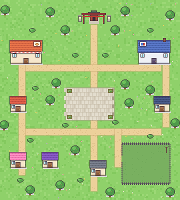
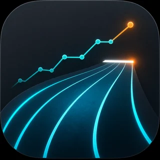

A LITTLE TOWN,A LITTLE WONDER. シミュレーション / プロトタイプ01 カミサマ、いま起きてる？現実の時間で動く、小さな町。カミサマになって、住民たちにちょっかいを。ゲームで遊ぶ
MOFUMOFUFOOTBALL CLUBBUILD YOUR TEAM サッカー / チーム育成02 もふもふ蹴球団動物や幻獣の選手を集め、自分だけのチームを編成。リーグの頂点を目指そう。ゲームで遊ぶ
YOUR RUN.YOUR RECORD.100m / 200m / 400m 陸上短距離 / 記録・分析01 スプリント記録100m・200m・400mのタイムを記録して、成長をグラフで振り返る。日々の走りを、次の一歩へ。アプリを使う